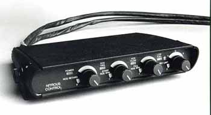

Absolutely the quickest and the simplest modification for the horsepower delivered. Designed specifically for your car, the NOS delivers measured amounts of both fuel and nitrous oxide to the motor for up to 150hp increase. A full range of accessories are available for adding horsepower over the basic kit. NOS can be used on a normally aspirated engine for an extra boost of power throughout the power band, or on a turbocharged engine to overcome the turbo lag on the bottom end and get the car off the line until the turbo boost kicks on the top end.